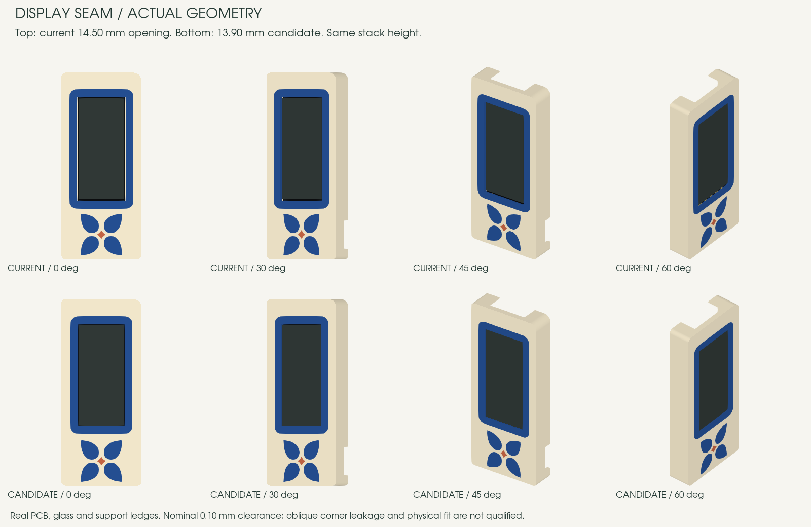

Flan
The chosen outline symbol, without a badge or a replacement dessert icon. Caramel bezel and a flush glaze crown.
#F2DFAF#68422F#B96732#DFAB50Exact curves, solid colors and flush details. These proposals share the 24 × 56 mm envelope and the corrected, glass-centered opening. They are separate from the six existing designs in the explorer.
Choose a design to inspect its dimensions. The SVG, editable FreeCAD review and render use the same millimetre paths.
The chosen outline symbol, without a badge or a replacement dessert icon. Caramel bezel and a flush glaze crown.
#F2DFAF#68422F#B96732#DFAB50
Full diagonal header, orange screen baseline, paired cassette spools and three equally spaced speaker slats.
#D2CEC1#303738#E27136#F0E9D6
A continuous forest panel and a long orange orbital sweep. The ivory disc sits inside the sweep, as in the reference.
#EEE5CD#315C4E#DF7339
Full ink panels separated by deliberate diagonal gutters, four dotted discs, and a red corner. The screen edge stays dark.
#F0EADB#27282E#DA453D
A console vent header and a full controller deck: gray D-pad surround, two red buttons, centered select/start bars.
#C6C7BE#32363B#C94B3E#8A8D8D
Yellow portable-player shell, a navy cassette-window bezel, a silver latch, striped speaker and blue transport controls.
#E4B54B#192D3B#275273#ACBCC0The render below uses the review solids. The dark rectangle is the modeled glass. The green LCD preview in the cards is contextual and does not fill missing material around the glass.

The 13.90 × 30.50 mm opening leaves 0.10 mm nominal glass clearance. The frame face remains at Z13.59 mm. No display translation or added stack height. The five approved bezels retain an exact 2.40 mm offset.
The comparison uses actual PCB, glass, frame and supports. It removes the broad pale side strips in the sampled views. This does not guarantee an invisible joint from every angle or a measured printed fit.
0.4 mm nozzle / 0.2 mm layer target; physical fit, thin motif tips and toolpath retention still need qualification.
Master SHA256: ef2bbd11dba76ecdcf68a31284468425ea415cd912505cd718164ec237a06a01